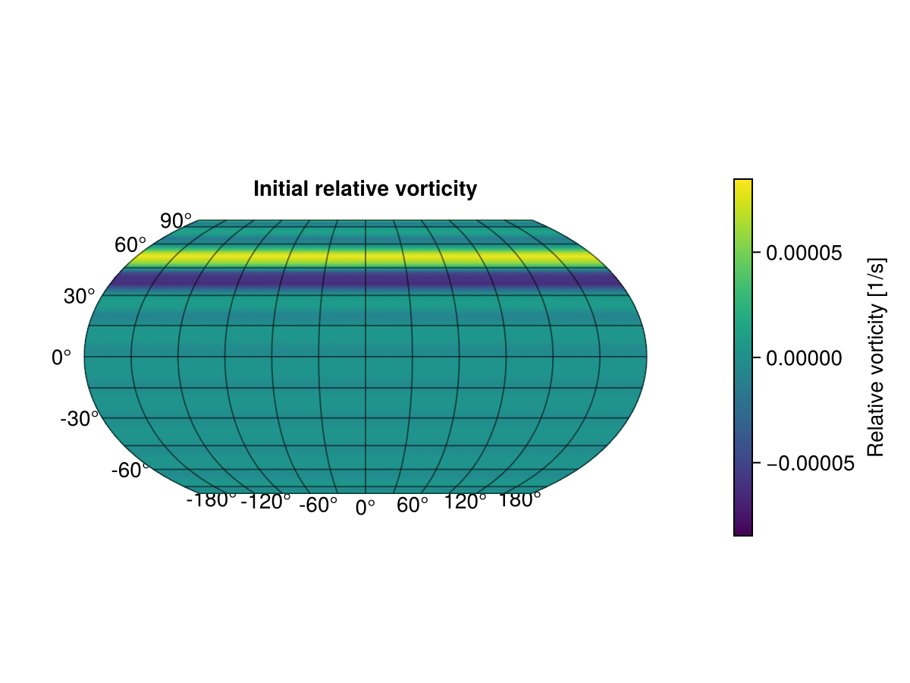
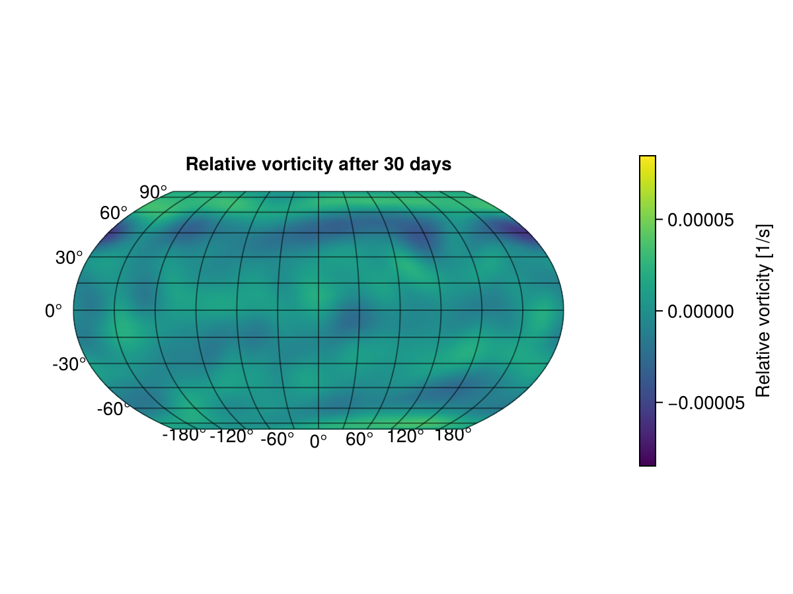
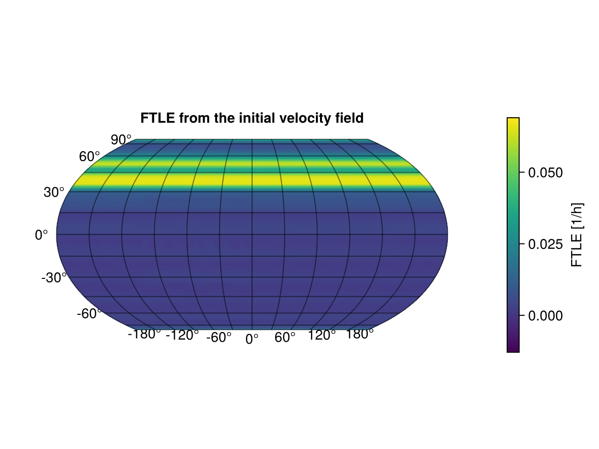
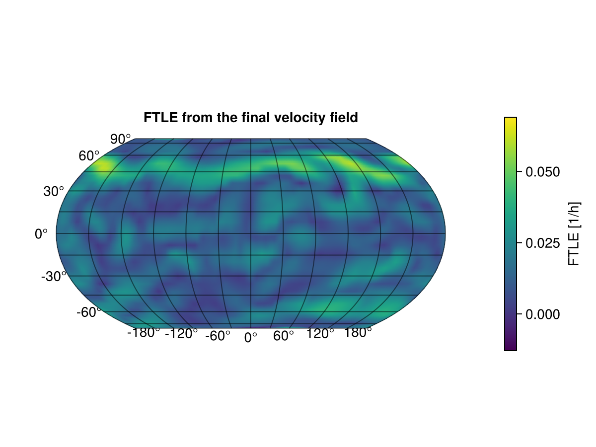

Worked Example: Zonal Jet FTLE
This example follows SpeedyWeather's shallow-water zonal jet setup with Earth orography, then computes FTLE fields from the velocity fields at the beginning and end of the run.
using CairoMakie
using GeoMakie
using Logging
using SpeedyWeather
using SpeedyWeatherFTLE
CairoMakie.activate!()
simulation_period = Day(30)
ftle_period_days = 1
spectral_grid = SpectralGrid(trunc = 21, nlayers = 1)
orography = EarthOrography(spectral_grid)
initial_conditions = ZonalJet(spectral_grid)
model = with_logger(NullLogger()) do
ShallowWaterModel(spectral_grid; orography, initial_conditions)
end
simulation = with_logger(NullLogger()) do
initialize!(model)
endThe zero-step run below asks SpeedyWeather to materialize the initial grid fields without advancing the jet. We copy the initial vorticity and velocity fields before the ordinary thirty-day shallow-water run changes them.
with_logger(NullLogger()) do
run!(simulation, steps = 0)
end
initial_vorticity = copy(simulation.variables.grid.vorticity[:, 1])
initial_u = copy(simulation.variables.grid.u[:, 1])
initial_v = copy(simulation.variables.grid.v[:, 1])
with_logger(NullLogger()) do
run!(simulation, period = simulation_period)
end
final_vorticity = copy(simulation.variables.grid.vorticity[:, 1])
final_u = copy(simulation.variables.grid.u[:, 1])
final_v = copy(simulation.variables.grid.v[:, 1])
(extrema(initial_vorticity), extrema(final_vorticity))((-6.246722f-5, 8.474117f-5), (-6.1111314f-5, 3.8707534f-5))The copied fields are RingGrids.Field values, so they can be plotted directly. Use a shared symmetric color range to compare the initial and final relative vorticity fields.
plot_lon = -180:2:180
plot_lat = -90:2:90
vorticity_colorrange = shared_colorrange(
initial_vorticity,
final_vorticity;
symmetric = true,
)
fig_initial_vorticity, _, _, _ = surface_plot(
initial_vorticity;
lon = plot_lon,
lat = plot_lat,
title = "Initial relative vorticity",
label = "Relative vorticity [1/s]",
colorrange = vorticity_colorrange,
coastlines = false,
)
fig_initial_vorticity
fig_final_vorticity, _, _, _ = surface_plot(
final_vorticity;
lon = plot_lon,
lat = plot_lat,
title = "Relative vorticity after 30 days",
label = "Relative vorticity [1/s]",
colorrange = vorticity_colorrange,
coastlines = false,
)
fig_final_vorticity
Now compute finite-time Lyapunov exponent fields from the initial and final velocity fields. Here the FTLE integration time is one day, sampled every six hours, and only the final integration horizon is returned.
initial_ftle, initial_time_hours = with_logger(NullLogger()) do
FTLE(
initial_u,
initial_v;
simulation_days = ftle_period_days,
rint_hours = 6,
particle_advection_every_n_time_steps = 4,
time_indices = :last,
)
end
final_ftle, final_time_hours = with_logger(NullLogger()) do
FTLE(
final_u,
final_v;
simulation_days = ftle_period_days,
rint_hours = 6,
particle_advection_every_n_time_steps = 4,
time_indices = :last,
)
end
(initial_time_hours, final_time_hours)([24.0], [24.0])Again use a shared color range so the two FTLE fields are visually comparable. The returned FTLE fields carry the same grid as the velocity fields.
ftle_colorrange = shared_colorrange(initial_ftle, final_ftle; pad = 0.05)
fig_initial_ftle, _, _, _ = surface_plot(
initial_ftle;
time_hours = initial_time_hours,
lon = plot_lon,
lat = plot_lat,
title = "FTLE from the initial velocity field",
colorrange = ftle_colorrange,
coastlines = false,
)
fig_initial_ftle
fig_final_ftle, _, _, _ = surface_plot(
final_ftle;
time_hours = final_time_hours,
lon = plot_lon,
lat = plot_lat,
title = "FTLE from the final velocity field",
colorrange = ftle_colorrange,
coastlines = false,
)
fig_final_ftle